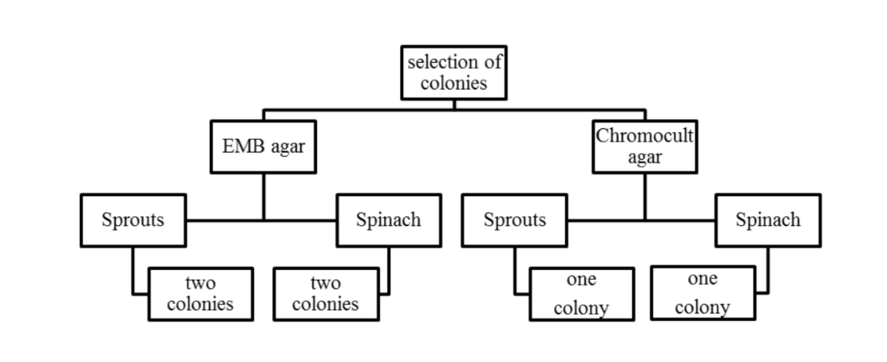

By Sean West and Vanessa Segovia
7/11/2014
The purpose of this investigation was to detect the presence of Escherichia coli (E. coli) on ready-to-eat alfalfa sprouts and spinach leaves purchased locally. This involved the use of both phenotypic and genotypic analysis. The methodology of this study was based on the isolation of bacteria present in the vegetables sampled, phenotypic tests (Gram-stain technique, selective media, and biochemical tests), DNA extraction and amplification (PCR for 16S ribosomal RNA, ERIC sequences and $stx_{1}$ genes), DNA-amplified purification, and sequencing. According to the phenotypic tests, the presence of E. coli in the samples was unlikely; these results were confirmed and supported by the results based on molecular methods obtained. Sequencing results indicated the presence of Aeromonas media (an opportunistic pathogen), and Pseudomonas koreensis (usually found in agricultural soil). These results were consistent with phenotypic results obtained. In conclusion, phenotypic methods represent an important contribution for bacteria identification; however, molecular methods are highly precise and accurate in comparison to them. This sample may be considered satisfactory and acceptable for human consumption.
E. coli is a gram-negative, facultative anaerobe, bacilli bacterium that is commonly found in the lower intestine of warm-blooded organisms. It is an essential part of the natural flora of the human gut. Along with a whole community of other bacteria, they play a role in metabolism by fermentation of non-digestible dietary residue, the salvage of energy as short-chain fatty acids, production of vitamin K, and absorption of ions. In addition to digestive functions, they serve to control proliferation of epithelial cells. And finally, they contribute to homeostasis of the immune system along with protection against pathogens.
When E. coli bacteria have the ability to share DNA, which can occur between E. coli themselves and other different species of bacteria, new metabolic capabilities or virulence factors can be acquired. One mechanism for DNA sharing is infection by prophages.
One such disease is known as hemolytic uremic syndrome (HUS) caused by shigatoxigenic E. coli (STEC). In 2011, STEC O104:H4 resulted in a large outbreak of HUS in Germany and 15 other countries in Europe and North America, causing a public health crisis and over two billion US dollars in economic losses. The present study followed some of the genotypic methods used in this investigation to detect and identify genes for virulence factors.
The present investigation used the method for separating microorganisms from ready-to-eat vegetables as outlined in Australia standard AS5013 for testing for microbes in ready-to-eat food. This involved the use of peptone water for the recovery of bacteria from samples, which is commonly used for E. coli testing as it allows for the recovery of injured cells. The use of selective media is essential for microbial isolation. On ChromoCult® agar, E. coli appears blue due to the hydrolysis of the media by $\beta$-glucuronidase enzyme produced by E. coli, while other coliforms produce a salmon color. However, the control E. coli O157:H7 lacks the ability to produce beta-glucuronidase, thus also produces pink colonies. Usually, E. coli can be easily differentiated from other bacteria on EMB agar due to the characteristic green metallic sheen produced by the fermentation of lactose and flagella movements. Phenotypic bacterial identification is complicated and non-accurate, but has been useful for general bacterial identification (genus). Some basic biochemical tests used are Gram staining, catalase, oxidase, indole, methyl red, and Voges-Proskauer tests. Differences in season or any physical characteristics of the sample may affect their outcome, and viral infection may also produce unstable phenotypes. This has led to the development of other typing methods based on the microbial genotype to minimize reproducibility problems.
One widely used genetic technique for typing is the polymerase chain reaction (PCR), which replicates DNA by imitating natural processes in an in vitro process with tight controls on temperature and chemical conditions. PCR replicates DNA in shorter runs rather than the whole genome. To check for toxin genes, PCR is run with specific primers that match the gene in question, allowing a run of DNA to be copied. Universal primers (such as 27 forward and 1492 reverse) are highly useful for the 16S rRNA PCR assay for identification purposes due to it being a highly conserved and essential gene among bacteria. The sequence of two closely related bacteria will be more similar than that of more distantly related bacteria, and exact nucleotide sequences can be compared to a database of established sequences. Primers used for Enterobacterial Repetitive Intergenic Consensus (ERIC) sequences match a common sequence of repetitive nucleotides existing between genes in enterobacterial species. When PCR is run with this primer, these repetitive sequences are amplified to large numbers, visualized as a characteristic pattern on an electrophoresis gel. ERIC sequences are useful for fingerprinting bacteria, similar to how junk DNA is used in humans. The $stx_{1}$ primer set encodes for shiga-like toxin type 1; if the gene is present, it will be amplified and able to be visualized as products of a specific size, for instance, ~366 bp long.
Another important molecular technique is electrophoresis, which uses electricity to separate molecules through a non-reactive matrix. Gel electrophoresis is most commonly used, with the matrix composed of either agarose gel or polyacrylamide gel. Agarose is used to separate large molecules like DNA, while polyacrylamide gel is used for smaller molecules like proteins. The migration rate of DNA through the gel is proportional to the number of bases, meaning heavier molecules travel slower, producing a pattern comparable to ladders with known base markers. Molecules move due to the resistance of their electric charge against the charge generated by electrodes. Fragments embedded in the gel can be stained and visualized under ultraviolet light.
The purpose of this experiment was to isolate, identify, and detect the presence of potential pathogenicity of E. coli from ready-to-eat spinach and alfalfa sprouts by phenotypic and genotypic techniques.
One sample of spinach and alfalfa sprouts were obtained from a randomly selected supermarket. The preparation of the samples was based on the FSANZ guidelines: 10 g of each sample were weighed using sterile stomacher bags, and then diluted in 90 mL of peptone water. Each bag was placed into a stomacher for 2 minutes to improve sample homogenization and organism recovery.
$100~\mu L$ of each sample were immediately placed and spread by duplicate onto selective media agar plates (EMB agar and Chromocult agar). As a positive control, one colony of E. coli O157:H7 was streaked by duplicated onto the same type of media. All six plates were incubated aerobically at $37^{\circ}C$ for 48 hours. After that, the agar plates of the sample were compared with the positive control agar plates to evidence the presence or absence of similarities between the morphology of the colonies forming units (CFU). Next, coliform-like colonies observed on the EMB agar (dark blue-black color colonies) and Chromocult agar (salmon color colonies) inoculated with the samples were selected as shown in Figure 1. Furthermore, one colony of the positive control was selected from the EMB agar. All selected colonies were streaked onto nutrient agar plates and incubated aerobically at $37^{\circ}C$ for 48 hours. The rest of the plates were kept at $\sim4^{\circ}C$. Following that, the isolated colonies were transferred to pre-labelled tubes with nutrient broth (1 to 3 for colonies from sprouts; 4 to 6 for colonies from spinach; 7 for positive control), and incubated under identical conditions previously mentioned. Results were recorded, tabulated, and analyzed.
Figure 1. Protocol followed for the selection of colonies to be isolated.
Morphology and chemical cell wall constitution of the isolated bacteria were examined by the Christian Gram stain method (1884) using light microscopy. After that, biochemical tests available and considered relevant for the identification of E. coli were performed (catalase, oxidase, lactose and glucose fermentation, indole, Voges-Proskauer (VP), methyl red (MR). To perform the catalase test, one colony of interest was placed on a glass slide; then, three drops of hydrogen peroxide were added onto the colony. The oxidase test was executed by using oxidase detection strips (Oxoid, 2014). Indole, VP, MR, lactose and glucose fermentation test tubes were inoculated with $100~\mu L$ of the nutrient broth cultures, and incubated at $37^{\circ}C$ for 24 hours. Later, results obtained and expected were recorded, tabulated, compared, and analyzed.
The isolation of genomic DNA from Gram-negative bacteria was performed by following the guidelines displayed in the Wizard® genomic DNA purification kit (Promega, 2010). First, an aliquot of 1.8 mL of each overnight bacterial suspension (samples) was placed into pre-labelled (1 to 7) 2 mL collection tubes. Next, the tubes were centrifuged at high speed (14000 rpm) for 1 minute, and the supernatant was discarded. The pellets were resuspended by adding $500~\mu L$ of extraction buffer. Afterwards, $20~\mu L$ of Lysozyme $(10~mg/mL)$ were added to each tube to cause the bacterial cell lysis. The tubes were sealed and vortexed thoroughly. Later, the tubes were incubated on ice for 15 minutes, followed by 5 minutes at $80^{\circ}C$, and 5 minutes more on ice to cool them down. Following that, $250~\mu L$ of 6 M ammonium acetate (stored on ice) were added to each tube, which were then sealed and vortexed vigorously, and left to stand for 10 minutes on ice. After that, the tubes were centrifuged at 14000 rpm for 5 minutes to collect the precipitated proteins and cellular biomass. Subsequently, $600~\mu L$ of the supernatant were recovered into new pre-labelled microcentrifuge tubes containing $360~\mu L$ of iso-propanol. The tubes were inverted around 5 times; then left for 5 minutes to allow the DNA to precipitate; and centrifuged (14000 rpm) for 5 minutes to pellet the DNA. The supernatant was tipped off, and the remaining fluid was drained off by inversion of the tubes onto a piece of paper towel. Successively, $500~\mu L$ of 70% ethanol were added to the tubes to wash the pellets. The tubes were then centrifuged (14000 rpm) for 5 minutes, and the supernatant discarded. The pellets (containing the DNA extracted) were resuspended in $100~\mu L$ of sterile water and $2~\mu L$ of RNase $(10~mg/mL)$. Finally, the quantity of DNA was measured by spectrophotometry using Biowave II and Hellma cell (Biochrom, 2006); and the quality was measured by electrophoresis. Results obtained and expected were recorded, tabulated, compared, and analyzed.
The quality of the genomic DNA extracted was determined by 1% agarose gel electrophoresis technique. To perform this technique, the first step was the preparation of the 1% agarose gel. 0.25 g of UltraPure™ agarose (Invitrogen, 2010) were weighed and placed into a flask; then, 30 mL of Tris-Acetate-EDTA (TAE) Buffer (previously diluted 30 mL in 270 mL of distilled water) were added to the flask, which was later placed into a microwave for ~45 seconds or until total dissolution of the solute. After 2-3 minutes, $2.5~\mu L$ of red gel were added to the flask and carefully shaken for 10 seconds. The content of the flask was poured into a casting tray with a comb. After solidification of the agarose gel, $5~\mu L$ of a molecular weight marker (Bioline 2014) was loaded into the first well (lane 1) of the gel, followed by $5~\mu L$ of each sample into the remaining wells. Later, the casting tray is placed into a gel box, which is then filled with diluted TAE buffer. The electrophoresis was run at 100 volts for 45 minutes. The gel was visualized under UV transilluminator. Results expected and obtained were recorded, compared, and analyzed.
In order to detect and identify E. coli from the samples (genomic DNA extracted), selected fractions of the gene that encodes for the 16S rRNA were amplified by PCR technique using the 27-forward (27F) and 1492-reverse (1492R) universal primers (product ~1500 bp). The $stx_{1}F$ and $stx_{1}R$ primers were used to amplify DNA fractions of the gene that encodes for the $Stx_{1}$ (product ~366 bp). To compare the fingerprinting pattern of the ERIC sequences of E. coli with the patterns of the samples, the ERIC1R and ERIC2 primers were used (product ~126 bp). To perform the PCR assays, a total volume of $50~\mu L$ of each sample was prepared in Eppendorf for PCR tubes as displayed in Table 1. Details about the primers and the conditions used for each PCR assay performed can be observed in Table 2.
| 16S rRNA | $Stx_{1}$ | ERIC | |
|---|---|---|---|
| Mango $Mix^{*}$ | $25~\mu l$ | $25~\mu l$ | $25~\mu l$ |
| Forward primer | $1~\mu l$ | $1~\mu l$ | $1~\mu l$ |
| Reverse primer | $1~\mu l$ | $1~\mu l$ | $1~\mu l$ |
| Sample | $15~\mu l$ | $15~\mu l$ | $15~\mu l$ |
| Water | $8~\mu l$ | $8~\mu l$ | $8~\mu l$ |
| Total volume preparer per sample | $50~\mu l$ | $50~\mu l$ | $50~\mu l$ |
| Number of samples | 7 | 7 | 7 |
| Primer | Sequence $5^{\prime}\rightarrow3^{\prime}$ | Product expected | PCR conditions | |||
|---|---|---|---|---|---|---|
| 27F | AGA GTT TGA TCC TGG CTC AG | ~1500 bp | Initial Denaturalization: $94^{\circ}C$ | 1c | 5 min | |
| Denaturalization: $94^{\circ}C$ | 34 | 1 min | ||||
| GGT TAC CTT GTT ACG ACT T | Annealing: $65^{\circ}C$ | 1c | 1 min | |||
| Elongation: $72^{\circ}C$ | 1 min | |||||
| Final elongation: $72^{\circ}C$ | 1c | 10 min | ||||
| 1492R | Final hold: $15^{\circ}C$ | 1c | 00 | |||
| ERIC1R | AAA TCG CCA TTC GTT GAC TAC TTC T | ~366 bp | Initial Denaturalization: $94^{\circ}C$ | 1c | 5 min | |
| Denaturalization: $94^{\circ}C$ | 34 | 1 min | ||||
| Annealing: $65^{\circ}C$ | 1c | 1 min | ||||
| $stx_{1}F$ | Elongation: $72^{\circ}C$ | < |